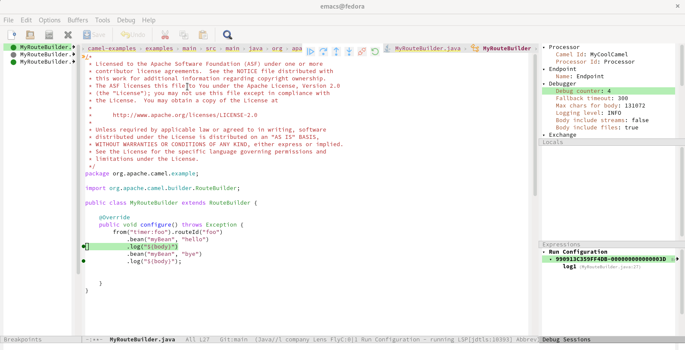

A month before it became easier to provide debug adapter support inside Vim -See this blog post. It is now time to use Camel Debug Adapter in Emacscamel-tooling/camel-dap-client-emacs.
EMACS Debug Adapter client for Apache Camel

How to debug Camel with emacs
I just got the debug integration for camel in emacs running using (https://emacs-lsp.github.io/dap-mode/page/adding-debug-server/). In order to not forget the config, I decided to quickly compile this readme.
Prerequisites
- Camel version 3.18+
- camel-debug is available on the classpath
- have JMX enabled
How to configure Emacs
In a ~/.emacs.d/dap-camel.el file:
(dap-register-debug-provider
"camel"
(lambda (conf)
(plist-put conf :host "localhost")
conf))
(dap-register-debug-template "Camel Attach"
(list :type "camel"
:request "attach"
:port 1099
:dap-server-path '("java" "-jar" "PATH/TO/camel-dap-server-0.4.0.jar")
:name "Run Configuration"))
M-x eval-buffer
How to get Camel Debug Adapter server.jar file?
- To get a jar file either you can compile the source or download from the Maven Central repository.
- To download from Maven Central repository
cd /home
curl -LO https://repo1.maven.org/maven2/com/github/camel-tooling/camel-dap-server/0.4.0/camel-dap-server-0.4.0.jar
How to attach camel application to emacs for debugging
-
To test the camel application debugging need a working example. Lot of good examples are provided in this repo, camel-examples.
-
To enable Camel Textual Route debugging, you need to launch this examples with
mvn camel:debug. -
I have specifically used example-main in this setup.
In Terminal
cd ~/camel-examples/examples/main
- vim src/main/java/org/apache/camel/example/MyBean.java
- Add the following content inside
MyBean.javafile:
package org.apache.camel.example;
public class MyBean {
private String hi;
public MyBean(String hi) {
this.hi = hi;
}
public String hello() {
return hi + " Begin ? ";
}
public String bye() {
return hi + " End ? ";
}
}
- Compile the source to reflect the new changes
mvn compile
- Launch this example with the profile
camel.debug
mvn camel:run -Pcamel.debug
Make the following changes and run your camel application
- M-x
load-file - Load file: ~/camel-examples/examples/main/src/main/java/org/apache/camel/example/MyRouteBuilder. java
- Inside
MyRouteBuilder.javafile:
package org.apache.camel.example;
import org.apache.camel.builder.RouteBuilder;
public class MyRouteBuilder extends RouteBuilder {
@Override
public void configure() throws Exception {
from("timer:foo").routeId("foo")
.bean("myBean", "hello")
.log("${body}")
.bean("myBean", "bye")
.log("${body}");
}
}
Debug It
To set the breakpoints
M-x dap-breakpoint-add
Now everything is in place. Open the main MyRouteBuilder file and start debugging by:
M-x dap-debug
Select configuration template: Camel Attach